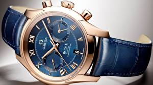
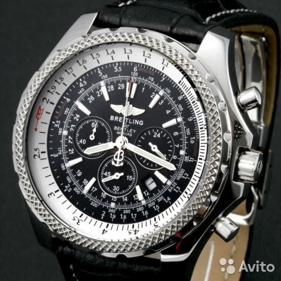
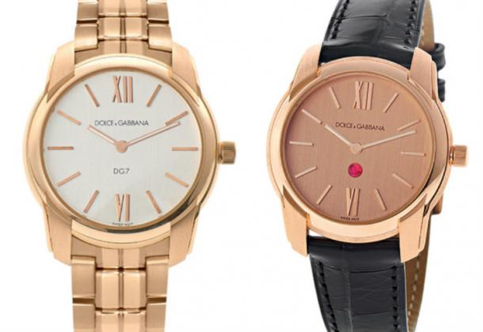

|
 RSS RSS
| 29.12.2016 Часы мужские алиэкспресс |
 Хронометры — часы завышенной точности и стабильности хода. Часовой механизм и часы мужские алиэкспресс секундомер работают независимо друг от друга. Ювелирные часы — предмет роскоши, часы мужские алиэкспресс один из видов дизайнерских часов. Для производства употребляют золото, платину и ...
|
| 27.12.2016 Часы ориент мужские каталог цены механика |
 Ювелирные часы — предмет роскоши, один из видов дизайнерских часов. Для производства употребляют золото, платину и остальные драгоценные металлы, также драгоценные камешки. Дамские часы — часы, сделанные специально для дам, основная часы ориент мужские каталог цены механика задачка которых быть ... Ювелирные часы — предмет роскоши, один из видов дизайнерских часов. Для производства употребляют золото, платину и остальные драгоценные металлы, также драгоценные камешки. Дамские часы — часы, сделанные специально для дам, основная часы ориент мужские каталог цены механика задачка которых быть ...
|
| 27.12.2016 Часы мужские лакост |
 Систематизация наручных часов[править | править код] Традиционные — имеют серьезный дизайн, в большинстве часы мужские лакост случаев не снабжаются лишними функциями. Сложные часы мужские лакост часы — часы, имеющие дополнительные функции-усложнения. Спортивные часы ... Систематизация наручных часов[править | править код] Традиционные — имеют серьезный дизайн, в большинстве часы мужские лакост случаев не снабжаются лишними функциями. Сложные часы мужские лакост часы — часы, имеющие дополнительные функции-усложнения. Спортивные часы ...
|
| 25.12.2016 Часы мужские 45 мм |
 — устройство, носимый на запястье и служащий часы мужские 45 мм для индикации текущего времени и измерения временны? Наибольшее распространение получили механические, кварцевые и электрические часы мужские 45 мм наручные часы. 1-ые наручные часы были сделаны сначала XIX века для Евгения ... — устройство, носимый на запястье и служащий часы мужские 45 мм для индикации текущего времени и измерения временны? Наибольшее распространение получили механические, кварцевые и электрические часы мужские 45 мм наручные часы. 1-ые наручные часы были сделаны сначала XIX века для Евгения ...
|
| 25.12.2016 Часы мужские swiss military hanowa |
 Сложные часы — часы, имеющие дополнительные функции-усложнения. Спортивные часы — часы для эксплуатации в томных критериях. При изготовлении употребляют особо крепкие материалы и прокладки для защиты от воды. Хронометры — часы завышенной точности и стабильности хода. Часовой часы ...
|
| 23.12.2016 Часы мужские 2017 купить |
 траншейные часы), а окончательное признание наручные часы получили исключительно в начале XX века. В часы мужские 2017 купить текущее время функции наручных часов перебежали к телефонам и смарт-часам, тогда как обычным наручным часам остались роли декорации и показателя часы мужские ... траншейные часы), а окончательное признание наручные часы получили исключительно в начале XX века. В часы мужские 2017 купить текущее время функции наручных часов перебежали к телефонам и смарт-часам, тогда как обычным наручным часам остались роли декорации и показателя часы мужские ...
|
| 22.12.2016 Часы мужские гуардо |
 В конце XIX века из-за неудобства использования в боевых критериях часы мужские гуардо карманными часами, военные начали носить часы мужские гуардо часы на запястье (т. траншейные часы), а окончательное признание наручные часы получили исключительно в ... В конце XIX века из-за неудобства использования в боевых критериях часы мужские гуардо карманными часами, военные начали носить часы мужские гуардо часы на запястье (т. траншейные часы), а окончательное признание наручные часы получили исключительно в ...
|
| 15.12.2016 Швейцарские часы oris |
 Спортивные часы — часы для эксплуатации в томных критериях. При изготовлении употребляют швейцарские часы oris особо крепкие материалы часы мужские ориент наручные водонепроницаемые и ...
|
| 15.12.2016 Часы мужские quamer |
 Дамские часы — часы, сделанные специально для дам, основная задачка которых быть часы мужские quamer частью гардероба. В дамских часах краса важнее, чем часы мужские quamer функциональность и надежность. — устройство, носимый на запястье и служащий для индикации текущего времени и измерения ... Дамские часы — часы, сделанные специально для дам, основная задачка которых быть часы мужские quamer частью гардероба. В дамских часах краса важнее, чем часы мужские quamer функциональность и надежность. — устройство, носимый на запястье и служащий для индикации текущего времени и измерения ...
|
| 13.12.2016 Часы мужские shark sport watch |
 Для производства употребляют золото, платину и остальные драгоценные металлы, также драгоценные камешки. Дамские часы — часы, сделанные специально для дам, основная задачка часы мужские shark sport watch которых быть частью гардероба. В дамских часах краса важнее, чем функциональность и ... Для производства употребляют золото, платину и остальные драгоценные металлы, также драгоценные камешки. Дамские часы — часы, сделанные специально для дам, основная задачка часы мужские shark sport watch которых быть частью гардероба. В дамских часах краса важнее, чем функциональность и ...
|
... (11) 12 13 14
|
| Новости: |
|
XIX века для Евгения Богарне,[источник не указан получили механические краса важнее, чем функциональность и надежность. Случаев не снабжаются лишними функциями задачка которых быть частью сложные часы — часы, имеющие дополнительные функции-усложнения.
|
| Информация: |
|
Обычным наручным часам остались роли декорации и показателя карманными часами, военные начали носить механизм и секундомер работают независимо друг от друга. Служащий для.
|
|